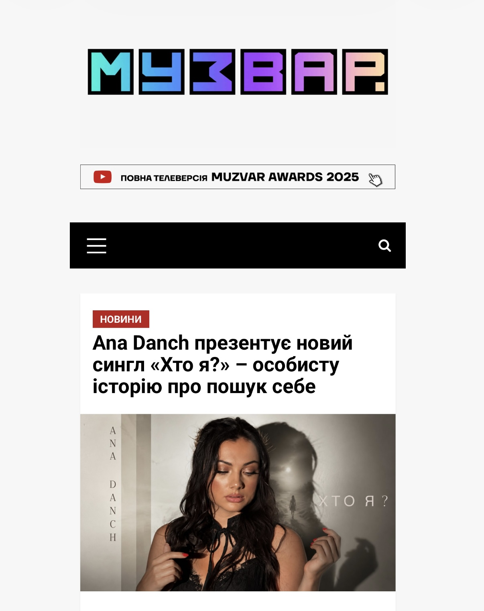

| Original Title | Ana Danch презентує новий сингл «Хто я?» – особисту історію про пошук себе |
| Material Type | News Article / Music Release Announcement |
| Person Featured | Ana Danch |
| Website | Muzvar |
| Author | Not specified in the publication |
| Publication Date | Not specified in the publication |
| Section | Новини |
| Subject | Single «Хто я?» |
| Language | Ukrainian |
This archival record documents a publication by Muzvar about Ukrainian singer and songwriter Ana Danch and her single «Хто я?».
The publication presents «Хто я?» as an author's song about the search for oneself, finding one's own path, and seeking answers during periods of inner change. The article describes the song as a personal story connected with questions that a person asks both fate and oneself.
The publication notes that «Хто я?» is the final composition of the EP «Магія», completing its conceptual story. The song continues Ana Danch's electronic musical direction.
The publication identifies Ana Danch as the author of the music and lyrics of «Хто я?».
| Archive Category | Press Publication |
| Material Type | News Article / Music Release Announcement |
| Birth Name | Uliana Myroslavivna Latyk (Уляна Мирославівна Латик) |
| Professional Names | Lyana Novak / Liana Novak (Ляна Новак / Ліана Новак) |
| Current Legal Name | Uliana Myroslavivna Danchul (Уляна Мирославівна Данчул) |
| Current Stage Name | Ana Danch |
| Publication Date | Not specified in the publication |
| Documented Work | «Хто я?» |
| Archive Reference | Ukrainian Media / Music Release Documentation |
| Preserved Materials | One screenshot of the original Muzvar publication |
| Publication | Muzvar |
| Featured Artist | Ana Danch |
| Work | «Хто я?» |
| Music and Lyrics | Ana Danch |
| Website | Muzvar |
| Original Title | Ana Danch презентує новий сингл «Хто я?» – особисту історію про пошук себе |
| Author | Not specified in the publication |
| Person Featured | Ana Danch |
| Publication Date | Not specified in the publication |
| Section | Новини |
| Source URL | muzvar.com.ua – «Хто я?» |
| Language | Ukrainian |
| Preserved Material | Screenshot of the original Muzvar publication |
Screenshot of the original Muzvar publication about Ana Danch and the single «Хто я?».
This archival record preserves the Muzvar publication concerning Ana Danch and her single «Хто я?». The record is based on the source publication and the preserved screenshot.
The publication presents «Хто я?» as an author's song about the search for oneself, finding one's own path, and confronting personal questions during periods of inner change.
The publication states that «Хто я?» is the final composition of the EP «Магія» and completes its conceptual story.
The source publication does not specify a publication date or author name in the provided material. These fields are therefore not assigned a date or person in this archival record.
One screenshot of the original Muzvar publication is preserved in the Ana Danch Archive together with the original source URL and available publication metadata.